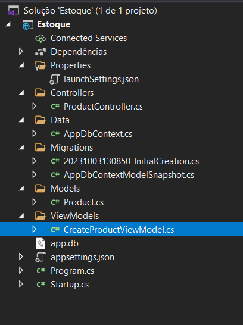
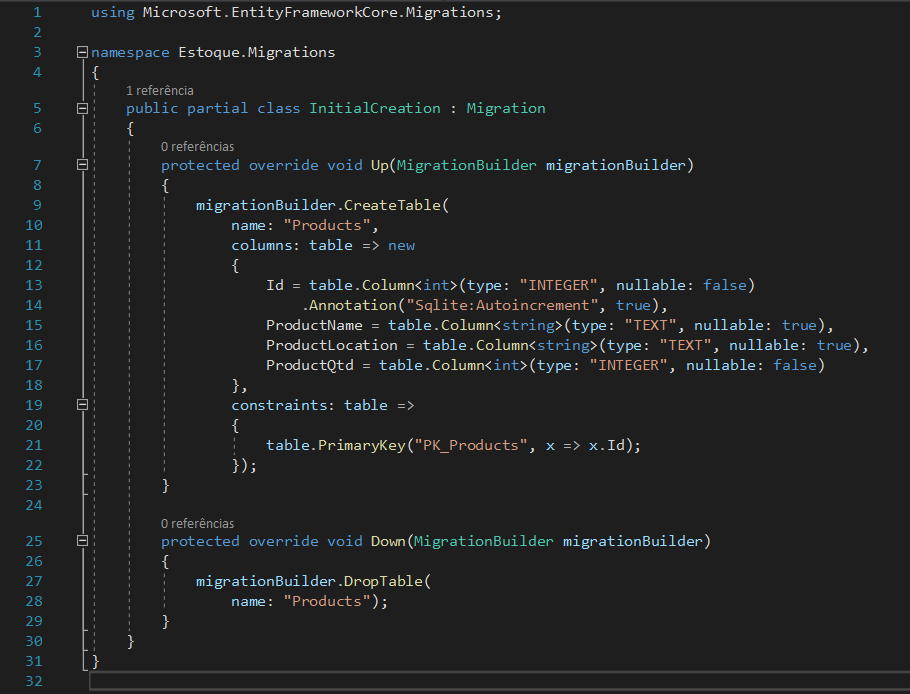
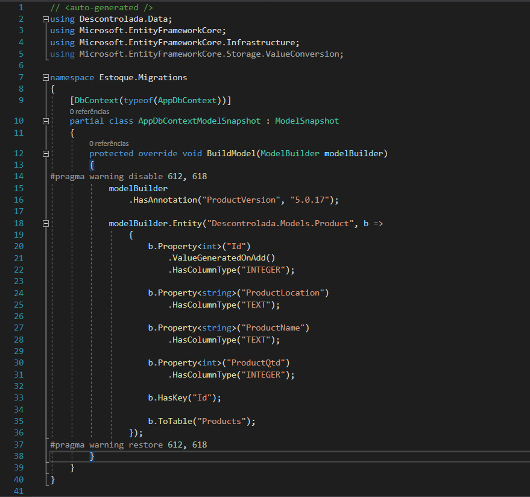

Backend: Base em C# com Entity Framework
Nosso projeto conta com um robusto backend desenvolvido em C# e usando o Entity Framework. O C# é a linguagem de programação que alimenta as operações centrais, enquanto o Entity Framework facilita o gerenciamento de dados no banco. Esse é o cérebro por trás de todas as operações, tornando nossa aplicação funcional e eficiente. Vamos mostrar como essas tecnologias trabalham juntas para fazer o nosso projeto funcionar. É a espinha dorsal que mantém tudo em funcionamento. 💻🚀
Estrutura da solução

Classe Startup
A classe Startup é uma parte fundamental de um aplicativo ASP.NET Core, onde você configura serviços e o pipeline de solicitação (request pipeline) que define como as solicitações HTTP são tratadas. Vamos analisar cada método desta classe:
Método Construtor Startup(IConfiguration configuration)
public Startup(IConfiguration configuration)
{
Configuration = configuration;
}
O construtor é chamado quando a classe Startup é instanciada. Ele recebe uma instância de IConfiguration, que é usada para acessar a configuração do aplicativo.
Propriedade Configuration
public IConfiguration Configuration { get; }
Esta é uma propriedade pública que armazena a configuração do aplicativo. É preenchida pelo construtor.
Método ConfigureServices(IServiceCollection services)
public void ConfigureServices(IServiceCollection services)
{
services.AddControllers();
services.AddCors();
services.AddDbContext();
services.AddSwaggerGen(c =>
{
c.SwaggerDoc("v1", new OpenApiInfo { Title = "Estoque", Version = "v1" });
});
}
Este método é usado para configurar os serviços necessários para o aplicativo. Aqui estão as principais ações realizadas:
- services.AddControllers(): Adiciona os controladores MVC ao serviço, permitindo o uso de APIs baseadas em controladores;
- services.AddCors(): Configuração do CORS (Cross-Origin Resource Sharing), permitindo que recursos em seu servidor sejam acessados por domínios diferentes;
- services.AddDbContext
(): Configura o contexto do banco de dados para a aplicação. AppDbContext é uma classe que representa o contexto do Entity Framework para interagir com o banco de dados; - services.AddSwaggerGen(...): Configura o Swagger para gerar documentação da API. O Swagger é uma ferramenta que facilita a documentação e teste de APIs;
Método Configure(IApplicationBuilder app, IWebHostEnvironment env)
public void Configure(IApplicationBuilder app, IWebHostEnvironment env)
{
if (env.IsDevelopment())
{
app.UseDeveloperExceptionPage();
app.UseSwagger();
app.UseSwaggerUI(c => c.SwaggerEndpoint("/swagger/v1/swagger.json", "Estoque v1"));
}
app.UseRouting();
app.UseAuthorization();
app.UseCors(x => x.AllowAnyHeader()
.AllowAnyMethod()
.AllowAnyOrigin());
app.UseEndpoints(endpoints =>
{
endpoints.MapControllers();
});
}
Este método é usado para configurar o pipeline de solicitação da aplicação. Aqui estão as principais ações realizadas:
- if (env.IsDevelopment()): Verifica se o aplicativo está rodando no ambiente de desenvolvimento. Se sim, habilita páginas de exceção detalhadas e configura o Swagger para a documentação da API;
- app.UseRouting(): Habilita o roteamento de solicitações, determinando qual código manipulará uma solicitação específica;
- app.UseAuthorization(): Habilita o middleware de autorização;
- app.UseCors(...): Configuração do CORS para permitir solicitações de qualquer origem, método e cabeçalho;
- app.UseEndpoints(...): Configuração dos pontos de extremidade, neste caso, mapeando os controladores MVC para manipular solicitações HTTP;
Essa classe Startup é essencial para a configuração e inicialização de um aplicativo ASP.NET Core. Ela define como o aplicativo será configurado e como as solicitações serão tratadas.
Classe CreateProductViewModel
A classe CreateProductViewModel é usada para criar um produto. Geralmente, ViewModels são usadas para representar dados específicos para as necessidades de uma view em uma aplicação MVC. Vamos analisar o código desta classe:
public class CreateProductViewModel
{
[Required]
public string ProductName { get; set; }
public string ProductLocation { get; set; }
public int ProductQtd { get; set; }
}
Propriedade ProductName
[Required]
public string ProductName { get; set; }
- A propriedade ProductName representa o nome do produto;
- A anotação [Required] é um atributo de validação que especifica que este campo é obrigatório. Isso significa que, ao tentar criar uma instância dessa ViewModel, o ProductName deve ser fornecido e não pode ser nulo;
Propriedade ProductLocation
public string ProductLocation { get; set; }
- A propriedade ProductLocation representa a localização do produto;
- Não há nenhuma anotação de validação aqui, então esta propriedade não é obrigatória;
Propriedade ProductQtd
public int ProductQtd { get; set; }
- A propriedade ProductQtd representa a quantidade do produto;
- Não há anotação de validação, o que significa que esta propriedade não é obrigatória;
Essa classe CreateProductViewModel é projetada para ser usada em cenários onde você precisa criar um novo produto e enviar os dados relacionados a esse produto do cliente para o servidor, possivelmente em um formulário da web. O uso de atributos de validação, como [Required], ajuda a garantir que os dados fornecidos pelo usuário estejam de acordo com as expectativas e requisitos do aplicativo.
Classe Product
A classe Product é uma entidade que representa um produto. Geralmente, em um contexto de desenvolvimento web com ASP.NET Core, essa classe seria associada a uma tabela em um banco de dados usando um ORM (Object-Relational Mapping), como o Entity Framework. Vamos analisar o código desta classe:
public class Product
{
public int Id { get; set; }
public string ProductName { get; set; }
public string ProductLocation { get; set; }
public int ProductQtd { get; set; }
}
Propriedade Id
public int Id { get; set; }
- A propriedade Id é geralmente usada como a chave primária da tabela no banco de dados. É um identificador único para cada instância de Product;
Propriedade ProductName
public string ProductName { get; set; }
- A propriedade ProductName representa o nome do produto;
Propriedade ProductLocation
public string ProductLocation { get; set; }
- A propriedade ProductLocation representa a localização do produto;
Propriedade ProductQtd
public int ProductQtd { get; set; }
- A propriedade ProductQtd representa a quantidade do produto;
Classe ProductController
Essa classe ProductController em C# é um controlador ASP.NET Core que expõe uma API para operações CRUD (Create, Read, Update, Delete) relacionadas a produtos. Vamos analisar cada método no controlador:
Método GetProduct
Este método retorna todos os produtos da base de dados. Ele utiliza o contexto do banco de dados (AppDbContext) injetado via serviço ([FromServices]). AsNoTracking() é usado para indicar que os resultados não serão rastreados pelo Entity Framework para otimizar o desempenho. Se não houver produtos, retorna um status NotFound. Caso contrário, retorna um status Ok com a lista de produtos.
[HttpGet]
[Route(template: "GetProduct")]
public async Task GetProduct([FromServices] AppDbContext context)
{
var products = await context
.Products
.AsNoTracking()
.ToListAsync();
if (products == null)
{
return NotFound();
}
return Ok(products);
}
- Verbo HTTP: GET;
- Rota: "v1/GetProduct";
Método GetByIdAsync
Este método retorna um produto específico com base no ID fornecido. Utiliza o contexto do banco de dados e, mais uma vez, usa AsNoTracking() para otimizar o desempenho. Se não houver produto com o ID especificado, retorna um status NotFound. Caso contrário, retorna um status Ok com o produto.
[HttpGet]
[Route(template: "GetById/{id}")]
public async Task GetByIdAsync([FromServices] AppDbContext context, int id)
{
var products = await context
.Products
.AsNoTracking()
.FirstOrDefaultAsync(x => x.Id == id);
if (products == null)
{
return NotFound();
}
return Ok(products);
}
- Verbo HTTP: GET;
- Rota: "v1/GetById/{id}";
Método CreateProduct
Este método cria um novo produto com base nos dados fornecidos no corpo da solicitação ([FromBody]). Verifica se o modelo recebido é válido usando ModelState.IsValid. Se não for válido, retorna um status BadRequest. Caso contrário, cria um novo produto, adiciona ao contexto do banco de dados, salva as alterações e retorna um status CreatedAtAction com o ID e o produto criado.
[HttpPost]
[Route(template: "CreateProduct")]
public async Task CreateProduct([FromServices] AppDbContext context, [FromBody] CreateProductViewModel model)
{
if (!ModelState.IsValid)
{
return BadRequest();
}
var product = new Product
{
ProductName = model.ProductName,
ProductLocation = model.ProductLocation,
ProductQtd = model.ProductQtd
};
try
{
await context.Products.AddAsync(product);
await context.SaveChangesAsync();
return CreatedAtAction(nameof(GetProduct), new { id = product.Id }, product);
}
catch (Exception e)
{
return BadRequest();
}
}
- Verbo HTTP: POST;
- Rota: "v1/CreateProduct";
Método UpdateProduct
Este método atualiza um produto existente com base no ID fornecido. Semelhante ao método de criação, verifica a validade do modelo recebido e retorna um status BadRequest se não for válido. Se o produto com o ID fornecido não existir, retorna um status NotFound. Caso contrário, atualiza as propriedades do produto, salva as alterações e retorna um status Ok com o produto atualizado.
[HttpPut]
[Route(template: "UpdateProduct/{id}")]
public async Task UpdateProduct([FromServices] AppDbContext context, int id, [FromBody] CreateProductViewModel model)
{
if (!ModelState.IsValid)
return BadRequest();
var product = await context.Products.FirstOrDefaultAsync(x => x.Id == id);
if (product == null)
return NotFound();
try
{
product.ProductName = model.ProductName;
product.ProductLocation = model.ProductLocation;
product.ProductQtd = model.ProductQtd;
context.Products.Update(product);
await context.SaveChangesAsync();
return Ok(product);
}
catch(Exception e)
{
return BadRequest();
}
}
- Verbo HTTP: PUT;
- Rota: "v1/UpdateProduct/{id}";
Método DeleteProduto
Este método exclui um produto com base no ID fornecido. Retorna um status NotFound se o produto com o ID especificado não existir. Caso contrário, remove o produto do contexto do banco de dados, salva as alterações e retorna um status NoContent.
[HttpDelete]
[Route(template: "DeleteProduct/{id}")]
public IActionResult DeleteProduto([FromServices] AppDbContext context, int id)
{
var product = context.Products.Find(id);
if (product == null)
return NotFound();
context.Products.Remove(product);
context.SaveChanges();
return NoContent();
}
- Verbo HTTP: DELETE;
- Rota: "v1/DeleteProduct/{id}";
Classe AppDbContext
Esse pedaço de código aqui faz parte da classe AppDbContext, que é tipo o cérebro da nossa aplicação quando o assunto é banco de dados. Aqui, estamos meio que dizendo para esse cérebro que temos uma tabela de produtos, representada pela classe Product.
public DbSet Products { get; set; }
Aqui, neste trecho de código, é como se a gente estivesse falando: "Ei, DbContext, a gente tem uma coleção de produtos aqui, tá ligado? Chama ela de Products."
E essa parte a seguir é como se a gente estivesse configurando qual tipo de banco de dados a gente quer usar. Tipo, a gente escolheu SQLite e disse onde queremos guardar esse banco de dados - no caso, num arquivo chamado "app.db".
protected override void OnConfiguring(DbContextOptionsBuilder optionsBuilder)
=> optionsBuilder.UseSqlite(connectionString: "DataSource=app.db;Cache=Shared");
Na linguagem do dia a dia, seria algo como: "Ei, DbContext, a gente vai usar SQLite, tá? E o banco de dados, poxa, a gente quer que ele seja um arquivo chamado 'app.db'."
Essa configuração é importante porque é como se estivéssemos dizendo para o Entity Framework onde e como encontrar o nosso banco de dados. Essa linha meio que faz essa mágica acontecer.
Migrations
 Essa migração está criando e revertendo (rollback) uma tabela chamada "Products" no banco de dados
 Esse código define como o modelo de dados da aplicação (nesse caso, a entidade Product) deve ser mapeado para o esquema do banco de dados.